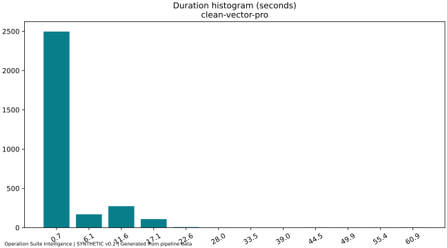
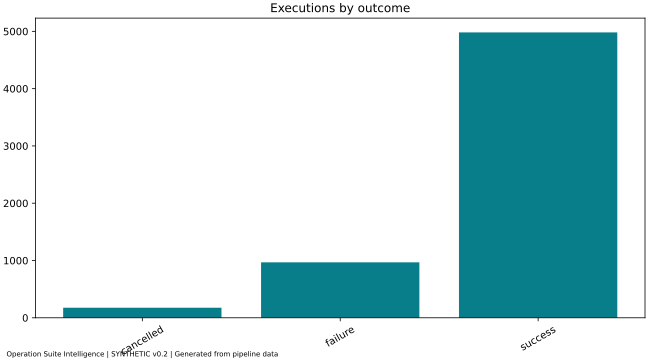
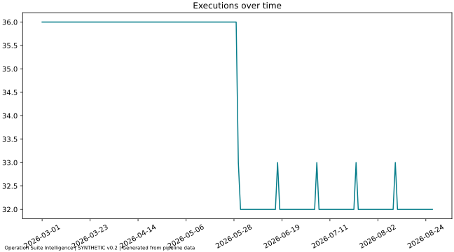
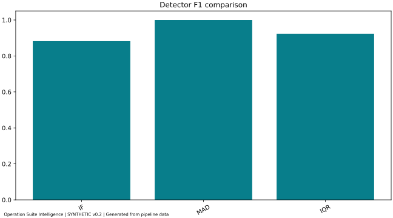

| Portada | Información |
|---|---|
| Estudiante | Miguel Angel Carranza Avilez |
| Docente | Ing. Naomy Ríos |
| Curso | Ciencia de Datos II |
| Fecha de cierre | 15 de septiembre de 2026 |
| Proyecto individual | Operation Suite Intelligence |
| Sistema base | Operations Suite |
| Alcance de entrega | Integración local funcional; dataset académico sintético; sin despliegue productivo |
Operations Suite administra cuentas, workspaces, permisos, herramientas, estaciones y telemetría operacional. Sus motores se ejecutan localmente en Illustrator. La plataforma base está terminada; el proyecto individual de Ciencia de Datos es únicamente Intelligence. Esta entrega añade análisis a la consola existente con una vista React nativa y exclusiva del Super Administrador.
Un listado de ejecuciones describe qué ocurrió, pero exige revisión manual para distinguir duración atípica, deterioro operativo y entidades que merecen atención primero. El problema seleccionado es convertir esa telemetría mínima en evidencia comparable, contextual y explicable. Una anomalía temporal puede haber terminado con éxito; un fallo puede durar poco. Por ello se mantienen separados el detector de duración y el resultado operativo.
El dataset v0.2 (0.2.0) contiene 6125 ejecuciones sintéticas, tres cuentas, cinco workspaces, diez dispositivos y dos herramientas. Cubre 180 días, del 1 de marzo al 27 de agosto de 2026. La semilla 20260915 reproduce las observaciones. Los primeros 90 días permiten desarrollo/evaluación; los siguientes 90, inferencia de escenarios operativos.
v0.1 se conserva íntegro como evidencia del avance, con módulos históricos en 'data-science/legacy/v0.1/'. Sus métricas no se mezclan con esta evaluación final.
'SYNTHETIC' indica generación académica. 'REAL_CONTROLLED' corresponde al adaptador de telemetría autorizada: usa lista cerrada de campos, etiquetas desconocidas null y lecturas acotadas. La entrega no incorpora datos empresariales reales. No se usan arte, nombres de documento, rutas, MAC, correos ni credenciales como variables. IDs sirven para agrupar y aislar, nunca para entrenar.
Los cinco escenarios tienen comportamiento propio: actividad saludable, seguimiento, riesgo elevado, incidente crítico y muestra insuficiente. Los scores no se asignan manualmente: se calculan después de inferir las ejecuciones. La generación de escenarios facilita la defensa pero también limita la validez externa.
'generateScenarios' produce los eventos sintéticos; 'telemetry-adapter.mjs' prepara extracción autorizada del emulador. La extracción exige claim Super Admin y cuenta explícita, con máximo de 1.000 eventos actuales, 1.000 de referencia, 400 dispositivos y 500 agregados diarios. La cobertura incompleta se declara y evita afirmar salud precisa.
Se validan esquema, fechas ISO, semver, origen, duración y categorías. Los duplicados idénticos se deduplican; todos los participantes de un conflicto se aíslan. Las claves compuestas incluyen cuenta y workspace. Se derivan segundos, 'log1p(duration_ms)' y atributos temporales. Las etiquetas conocidas se reservan a evaluación; unknown/null no se convierten en normales. Resultado de esta ejecución: 6125 entradas, 6125 aceptadas, 0 rechazadas y 0 conflictos.
El proceso genera 32 figuras desde observaciones y métricas, más 'EDA_FIGURES.pdf'. Para la defensa se seleccionan distribución de duración, resultados operativos, comparación de detectores y evolución temporal. Las tablas de salud y prioridad complementan el EDA con resultados operativos derivados.

La duración tiene una escala dependiente de la herramienta. Se modela por herramienta/acción y se transforma a escala logarítmica para comparar desviaciones relativas.

El resultado operativo se mantiene separado de la etiqueta de anomalía: la duración atípica no demuestra fallo.

Isolation Forest aísla observaciones mediante particiones aleatorias y asigna mayor rareza a caminos promedio más cortos [1]. La implementación serializable usa 200 árboles y submuestras de 256, con una variable: 'log_duration'. Excluye status, etiquetas e identificadores. No produce una probabilidad de fallo. El umbral IF es el percentil 95 de scores de calibración.
La implementación se contrastó con scikit-learn [2] bajo las mismas particiones y parámetros: correlaciones Spearman 0.9420 y 0.9573. El criterio previo fue ≥0,90. No se exige identidad de árboles porque cambian el generador aleatorio y la construcción de particiones. Se conserva 'reference-validation.json' con esas diferencias.
MAD calcula la distancia robusta absoluta 0,6745 × (log duración − mediana) / MAD; su umbral fijo es 3,5. Si MAD es cero se aplica un respaldo explícito probado para valores constantes. IQR usa distancia fuera de Q1/Q3 normalizada por su rango intercuartílico; su umbral es 1,5. Los tres detectores se evalúan independientemente, sin una unión que infle el resultado.
| Partición | Días | Inicio | Fin |
|---|---|---|---|
| train | 54 | 2026-03-01 | 2026-04-23 |
| calibration | 18 | 2026-04-24 | 2026-05-11 |
| test | 18 | 2026-05-12 | 2026-05-29 |
| inference | 90 | 2026-05-30 | 2026-08-27 |
Se elige el detector por F1 en calibration entre candidatos fijos. Los empates prefieren MAD, IQR e IF en ese orden. Test no ajusta umbrales ni selección: una prueba altera sus resultados y confirma que las decisiones de calibración permanecen iguales. En ambos grupos se seleccionó MAD. El conjunto test permanece reservado a evaluación; inference contiene datos posteriores, puntuados con el artefacto guardado y sin reentrenar.
Evaluación reservada: 648 ejecuciones con 648 etiquetas conocidas.
| Detector | Precision | Recall | F1 | TP | FP | TN | FN |
|---|---|---|---|---|---|---|---|
| IF | 0.7895 | 1.0000 | 0.8824 | 30 | 8 | 610 | 0 |
| MAD | 1.0000 | 1.0000 | 1.0000 | 30 | 0 | 618 | 0 |
| IQR | 0.8571 | 1.0000 | 0.9231 | 30 | 5 | 613 | 0 |

MAD supera a Isolation Forest en este dataset. La aplicación lo muestra y usa MAD para decisiones. El desempeño perfecto de MAD refleja este escenario sintético, no garantiza desempeño en producción. IF conserva su función como modelo ML académico comparado honestamente con baselines.
'model.json' contiene árboles, semillas, parámetros, umbrales, selección y períodos. 'score' carga ese artefacto y puntúa nuevas observaciones sin llamar al entrenamiento. 'intelligence-result.json' versión 2.0.0 presenta 2885 ejecuciones del período de inferencia. El navegador recibe ese contrato por HTTP protegido, nunca CSV arbitrario ni el artefacto de entrenamiento.
Se promedian con pesos iguales cuatro componentes 0–100: éxito operativo; complemento del límite superior Wilson de la tasa de anomalías; deterioro de mediana respecto al rango mediana–P95 histórico por herramienta/acción/versión; y deterioro máximo entre anomalías, fallos, cancelaciones y duración. La referencia académica es train, siempre anterior a la ventana visible. El componente trend es una puntuación de estabilidad, no un porcentaje de crecimiento. Los gráficos agregan semanas; no se interpola salud cuando falta muestra.
Se requieren al menos 20 ejecuciones tanto actuales como históricas por grupo comparable. Healthy ≥90; monitor ≥75; high_risk ≥60; critical <60. Si la referencia o muestra no alcanza, el estado es insufficient_data y el score es null. Los umbrales de salud son una política operativa explícita, no parámetros aprendidos ni clínicamente validados.
| Cuenta | Workspace | Health Score | Estado | Ejecuciones |
|---|---|---|---|---|
| account_demo_b | workspace_incident | 3.33 | critical | 720 |
| account_demo_b | workspace_shared | 71.85 | high_risk | 720 |
| account_demo_a | workspace_review | 88.31 | monitor | 720 |
| account_demo_a | workspace_shared | 96.35 | healthy | 720 |
| account_demo_c | workspace_sparse | Sin score | insufficient_data | 5 |
Se ordena primero por estado y menor salud, luego por tasas normalizadas, severidad, estabilidad, confianza y desempates determinísticos. El volumen no es una penalización independiente; interviene en la incertidumbre y como desempate tardío. Las entidades con muestra insuficiente requieren más evidencia y se distinguen de un incidente confirmado.
Why Flagged muestra duración observada, mediana y P95 de referencia, desviación, scores y umbrales IF/MAD/IQR, intervalo IQR convertido a segundos, detector de decisión, severidad, resultado y acción. Las recomendaciones consisten en revisar ejecuciones, verificar consistencia de versiones o monitorear. Nunca se atribuyen problemas de CPU, red o desempeño del operador.
El Super Admin puede empezar por 'device_incident_0' de 'account_demo_b', revisar evidencia y ejecuciones de su contexto y comparar herramientas/versiones antes de actuar. Puede acotar la revisión a una cuenta, workspace o dispositivo, variar 7/30/90 días y contrastar detectores. El resultado orienta revisión; no suspende estaciones ni cambia permisos automáticamente.
La integración transforma un historial de ejecuciones en una cola de revisión explicada y navegable. Incluye diez KPI derivados, tablas ordenables/paginadas, seis tendencias, filtros, detalles accesibles y ES/EN. Se mantiene el aislamiento por cuenta incluso ante workspaces con el mismo ID. La navegación, el servicio y la proyección niegan roles menores; el backend de Emulator verifica tokens reales. El modo offline sirve exclusivamente el dataset sintético mediante una capacidad local: representa una identidad de demostración, no autentica a una persona real.
La validación ejecutada y sus cantidades vigentes están en FINAL_ACCEPTANCE.md. La demo está documentada en DEMO_RUNBOOK.md.
Validar con telemetría autorizada y etiquetas revisadas; medir drift y costo de falsos positivos; evaluar variables operativas adicionales solo si son legítimas y medibles; versionar recalibraciones; validar umbrales de salud y comparar contra decisiones de un supervisor. Cada ampliación productiva requiere su propio alcance y revisión.
Seguir los comandos exactos del README académico. Los artefactos finales se generan fuera de React. La defensa dura 10–12 minutos y cuenta con PRESENTATION_OUTLINE.md. Los PDFs de avance se conservan como historia; este documento es el proyecto final individual.